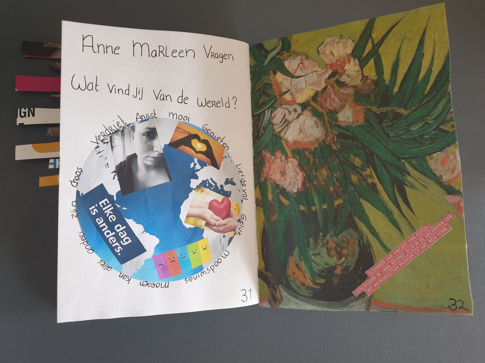
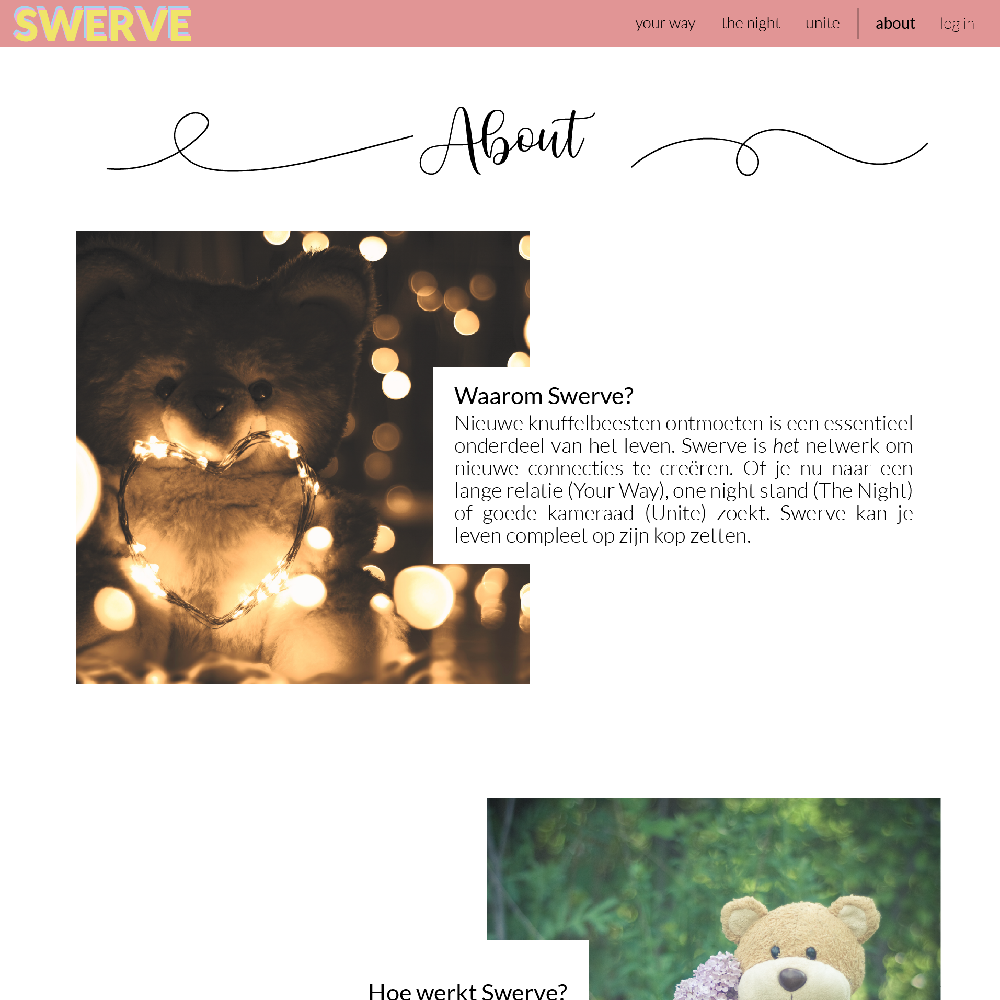
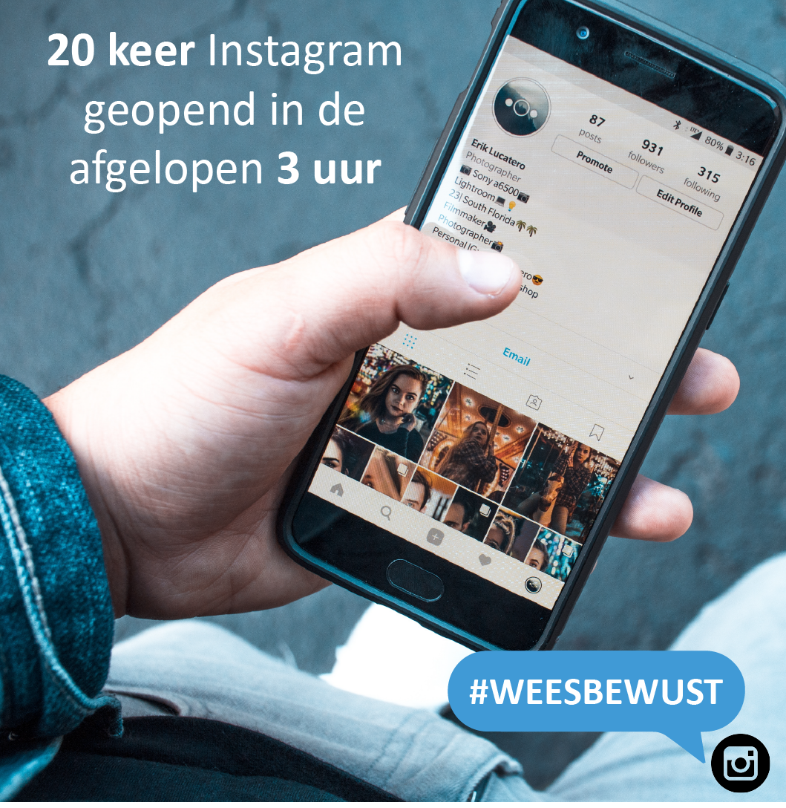
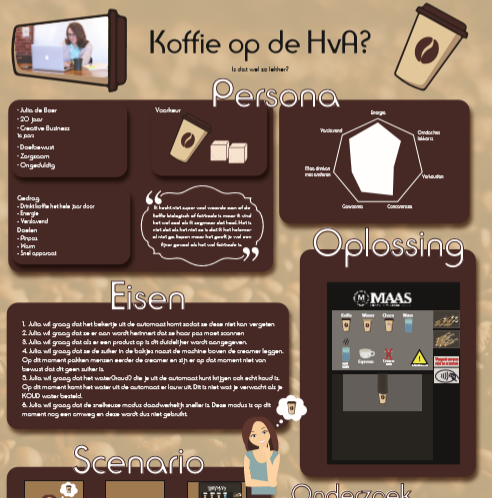

Vormgeving [Blok 2]
Verdiepen in ontwerpstijlen en daarmee een ontwerp maken voor een one-pager.

Verdiepen in ontwerpstijlen en daarmee een ontwerp maken voor een one-pager.
Het bekijken van hoorcolleges en het maken van sketchnotes over de geschiedenis van het ontwerpen.
Methoden en technieken leren gebruiken voor ideeontwikkeling en om ontwerpkeuzes te onderbouwen.

Contentbegrippen onderzoeken en daarna een site ontwerpen met contentbegrippen inbegrepen.
Case-study schrijven over een app/website en een idee bedenken om deze te verbeteren op basis van verslaving.
Het bestuderen van de koffie automaten en een verbetering vinden door middel van onderzoek.
